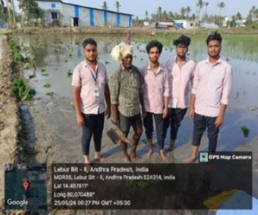
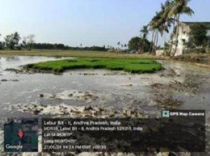

WEEKLY REPORT
WEEK- 3 (From 27-05-24 to 01-06-24)
Objective of the Activity Done: Awareness on Organic farming:
Detailed Report:
Day 1:
-
- > I visited some fields and interacted with the farmers.
- > I collected the details about their losses.
- > I studied the reasons for their losses.
- > I came to a conclusion that organic farming is the best method to increase the production.
Day 2:
- > I have seen the farmers cultivating the different crops in the same field.
- > I have later understood that growing of different crops in the same area is called mixed cropping.
- > Farmers have instructed us that by use of mixed cropping we can increase the nutrient quality of the soil.
- > Farmers explained the uses of mixed cropping.
Day 3:
- > I have explained the disadvantages of pesticides to the farmers.
- > I have explained it by using the various sources such as internet etc.
- > I have explained the organic farming is the best method to use which can avoid the use of
Day 4:
- > I instructed the farmers to use organic farming in their field.
- > I have explained the steps to implement organic farming in their field.
- > I have explained the types of organic farming.
Two types of organic farming:1. Integrated organic farming
Day 5:
- > I discussed the use of organic farming which leads to major changes in the future of India with the farmers.
- Some of the factors that organic farming helps to poverty reduction and food security:
- > Increasing yields of production with low inputs.
- > Increasing revenue and lowering costs.
- > Creating a food that is both safe and diverse.
- > Having a long-term sustainability.

